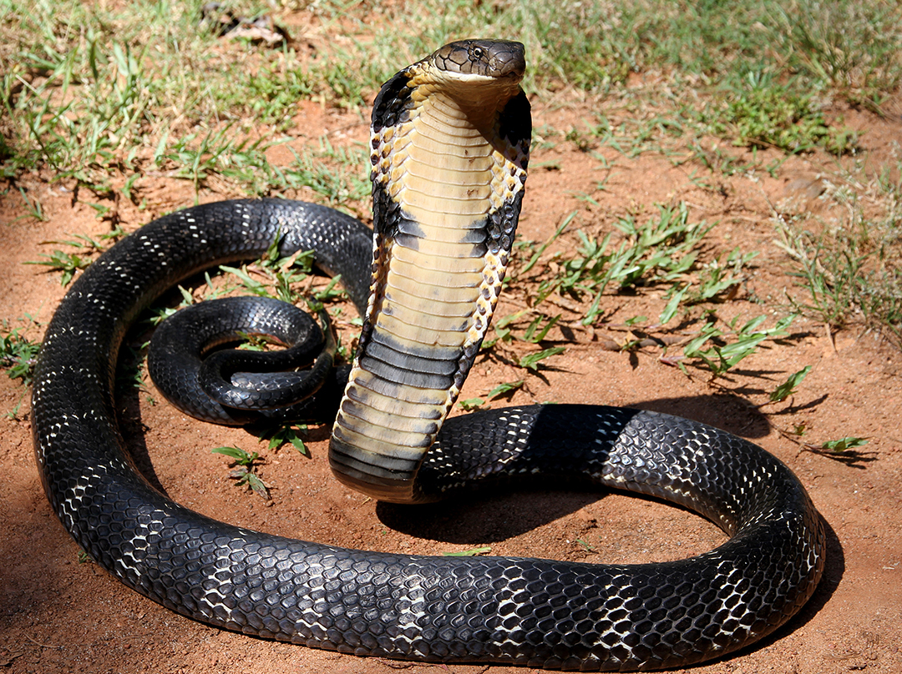

The king cobra (ophiophagus) is the world's longest venomous snake, growing to lengths of up to 5.6 metres They are native to Asia, found mot commonly in India, southern China, and eastern Pakistan.

Quick Facts
A king cobra's venom is a powerful neurotoxin, which is capable of killing a human wihin minutes when bitten.
A single bite from a king cobra can contain enough venom to kill an elephant.
King cobras have a long lifespan for a snake, living on average up to 20 years in the wild. In captivity, they may live for as many as 30 years.
King cobras are cannibalistic, preferring to eat other snakes, though they also eat lizards and birds.
King cobras can go months without eating and don't need to drink water, absorbing it through their bodies instead.
King cobras do not have any teeth so swallow their prey whole.
King cobras can swim, climb trees, and move as fast as 12mph.
King cobras are capable of "standing" up to around the same height as an average human, which it does to get a better look at its surroundings or as a defensive display if threatened, along with flaring its hood.
Despite their reputations, king cobras are shy animals and avoid humans when possible.